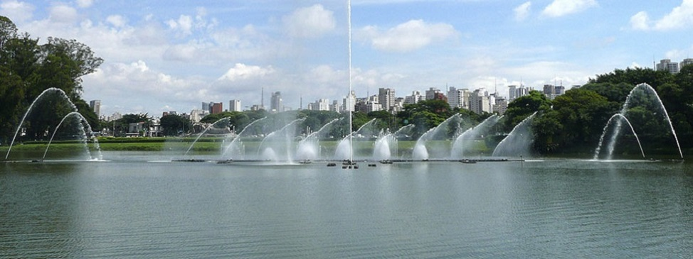
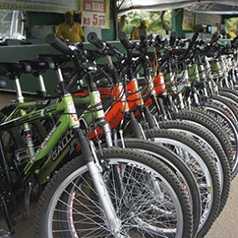
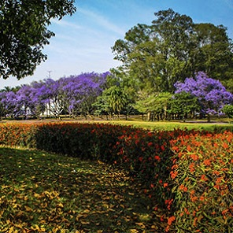

Bicicletario
Muitas pessoas preferem o aluguel de bicicleta do que comprar uma. Por isso lançamos este post para ajudá-las a conhecer um pouco mais sobre o assunto e tomar a decisão correta...
Caminhada guiada
Caminhada com grupo de amigos e parceiros do Parque Ibirapuera Conservação com apresentação de aspectos históricos e curiosidades, conhecendo mais de 40 pontos de interesse entre equipamentos culturais e ...

Jardim do Ibirapuera
Como muitos parques urbanos ao redor do mundo, muitas vezes nascidos como jardins para recolher espécimens de plantas e árvores de várias proveniências, para o estudo e/ou deleite dos seus frequentadores, o Parque...